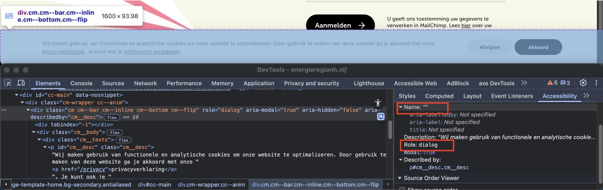
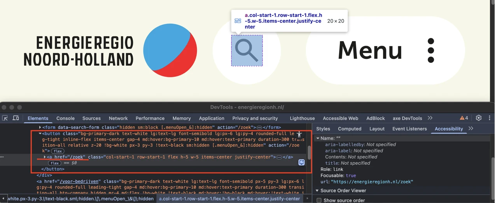
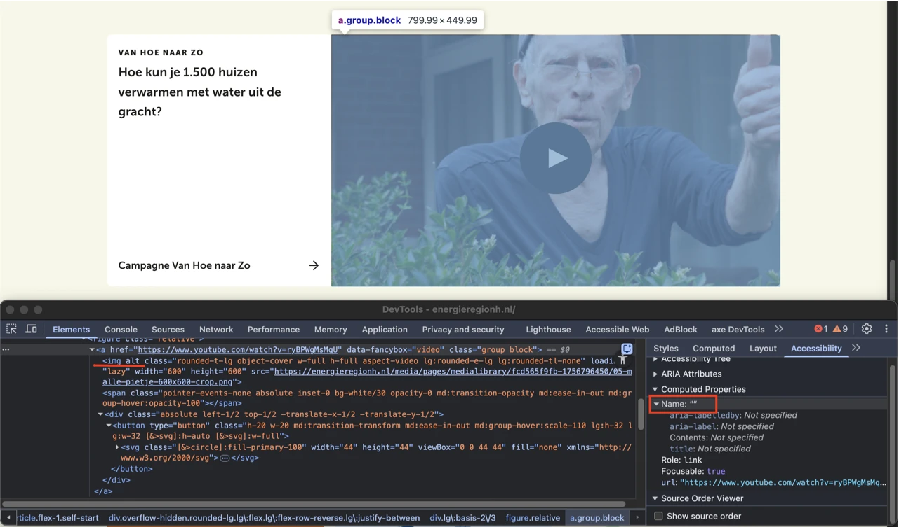
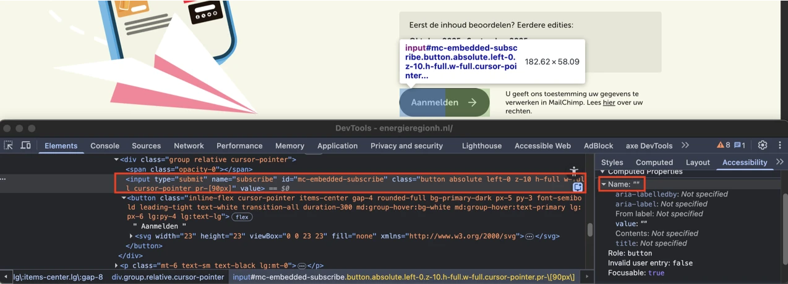
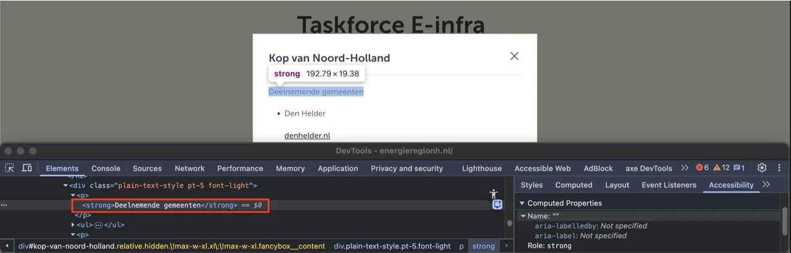
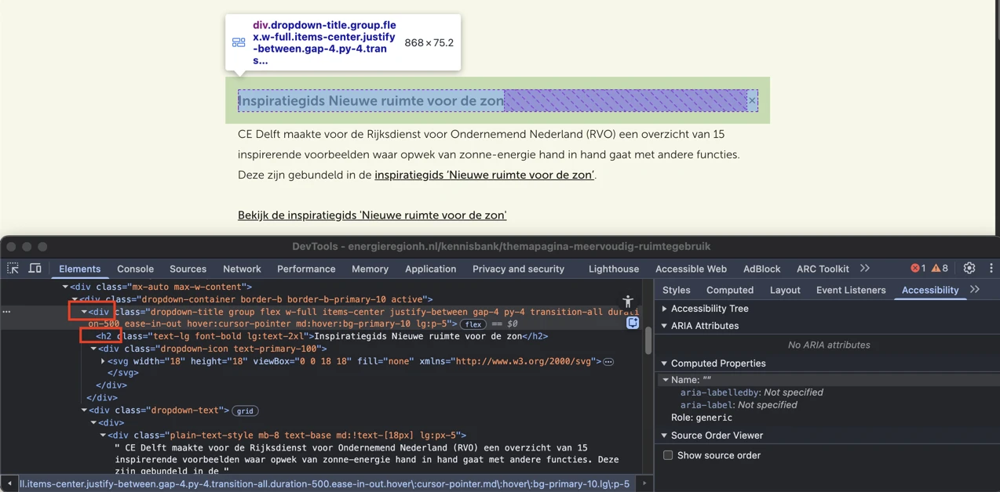
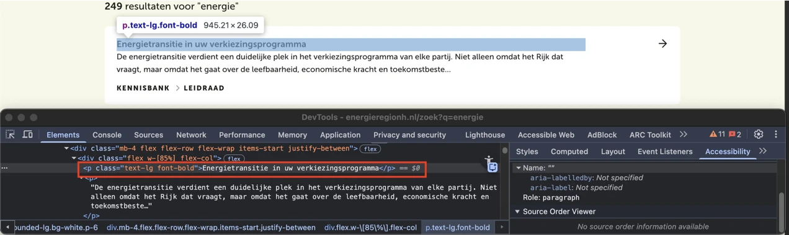

Audit digitale toegankelijkheid van website energieregionh.nl
Samenvatting
Wij hebben de website energieregionh.nl onderzocht tussen 20 en 27 oktober 2025. Op dit moment zijn 32 van de 55 succescriteria als voldoende beoordeeld. In dit rapport lees je wat er bij de overige 23 nog fout gaat, en hoe je dat kunt verbeteren.
De pagina’s van de website bevatten geen skiplink.
Er moet een manier zijn om delen van een pagina over te slaan, zoals het navigatiemenu en andere elementen die op meerdere pagina’s terugkomen. Je gebruikt hier een skiplink voor. Daarmee kun je vaste blokken met herhalende inhoud overslaan. Een skiplink moet de eerste link op de pagina zijn. Deze link mag verborgen zijn, maar moet zichtbaar worden zodra hij focus krijgt.
Oplossing:
Voeg een skiplink toe waarmee bezoekers herhalende delen van de pagina over kunnen slaan.
Zorg dat de skiplink:
de eerste link op de pagina is;
visueel verborgen is, maar zichtbaar wordt bij toetsenbordfocus;
naar de hoofdcontent van de pagina springt als de bezoeker de link activeert.
#2 - Cookiebanner krijgt niet als eerste toetsenbordfocus
Wanneer een bezoeker de website voor het eerst bezoekt, verschijnt er een cookiebanner. Deze banner krijgt echter niet als eerste de toetsenbordfocus, terwijl dat wel zou moeten. De banner bedekt de inhoud van de pagina, en als de toetsenbordfocus daar niet als eerste naartoe gaat, kunnen bezoekers die alleen met het toetsenbord navigeren het bericht niet sluiten. Om deze banner te sluiten, moet helemaal naar de onderkant van de pagina worden genavigeerd met de tabtoets.
Oplossing:
Zorg dat de focus als eerste naar de cookiebanner gaat.
#3 - Focus niet meer zichtbaar omdat cookiebanner bij inzoomen deel van pagina bedekt
Impact: GrootType: TechniekWCAG: 2.4.11
Wanneer een bezoeker de website voor het eerst bezoekt, verschijnt er een cookiebanner. Als er wordt ingezoomd tot 200% op een scherm met een resolutie van 1280 bij 1024 pixels, komt de toetsenbordfocus op elementen terecht die onder de cookiebanner verborgen zijn. Hierdoor is niet zichtbaar waar de focus zich bevindt.
Oplossing:
Zorg dat elementen die toetsenbordfocus krijgen altijd zichtbaar blijven. Hierdoor kunnen bezoekers die alleen het toetsenbord gebruiken duidelijk zien welk element op dat moment de focus heeft.
#4 - Dialoogvenster heeft geen toegankelijke naam
Impact: GrootType: TechniekWCAG: 4.1.2EN: 9.4.1.2

Wanneer een bezoeker de website voor het eerst bezoekt, verschijnt er een cookiebanner. In de HTML-code is deze cookiebanner gemarkeerd met `role=”dialog”`. Dit dialoogvenster heeft echter geen toegankelijke naam.
Hulpsoftware kan hierdoor niet doorgeven welke inhoud het dialoogvenster heeft.
#### Oplossing:
Voeg een `aria-label` aan het dialoogvenster toe met een duidelijke beschrijving van de inhoud.
### Logo is een link, maar bestemming is onbekend
Het logo bovenaan de website toont de volledige tekst "Energie regio Noord-Holland", maar het tekstalternatief is “Go to homepage”, afkomstig van het `aria-label`-attribuut. In het tekstalternatief staat dus niet alle tekst die in het logo te zien is. Dit moet wel. Zo weten bezoekers die het plaatje niet kunnen zien, ook precies wat er staat.
Deze fout is in strijd met succescriterium 2.4.4. Hierdoor is het voor bezoekers die hulpsoftware gebruiken lastig om te bepalen naar welke pagina of inhoud de link verwijst.
De toegankelijke naam van de link komt niet overeen met de zichtbare tekst in het logo. Daardoor werkt de link niet goed wanneer deze met spraakbediening wordt geactiveerd. De tekst die zichtbaar is in het logo wordt uitgesproken, maar als de toegankelijke naam anders is, wordt de link niet herkend. Dit is in strijd met succescriterium 2.5.3.
#### Oplossing:
Zorg dat de tekst die in het logo zichtbaar is voorkomt in de toegankelijke naam, het liefst vooraan. Het is nog beter als de toegankelijke naam gelijk is aan de zichtbare tekst.
### Toegankelijke namen zijn in het Engels geschreven
Het logo bovenaan de website toont de volledige tekst "Energie regio Noord-Holland", maar het tekstalternatief is “Go to homepage”, afkomstig van het aria-label-attribuut. Het aria-label-attribuut bevat dus tekst in het Engels.
Het label wordt voorgelezen door schermlezers, volgens de uitspraakregels van de primaire taal van de pagina (in dit geval Nederlands).
Oplossing:
Vertaal de tekst van de aria-label-attribut naar het Nederlands, zodat het correct wordt uitgesproken door schermlezers.
In het bovenste menu verschijnt er een knop met een “X”-icoon zodra een bezoeker een waarde typt in het zoekveld. Dit icoon heeft geen tekstalternatief. Als een knop alleen uit een afbeelding bestaat, moet de alternatieve tekst van de afbeelding de functie van de knop beschrijven.
Deze fout is ook in strijd met succescriterium 4.1.2, omdat deze knop geen toegankelijke naam heeft.
Hierdoor begrijpen bezoekers die een schermlezer gebruiken niet wat de bestemming of de functie is van de knop.
Oplossing:
Voeg de beschrijving toe via een title-element bij een svg, een aria-label of een tekst die visueel verborgen is, maar toegankelijk voor de schermlezer.
#6 - Het zoekveld heeft geen blijvend zichtbaar label wanneer het toetsenbordfocus krijgt
In de header zijn de plaatshoudertekst “Zoeken” en het vergrootglasicoon niet meer zichtbaar wanneer het zoekveld toetsenbordfocus krijgt. De achtergrond van het veld wordt zwart bij focus, waardoor zowel de zwarte tekst als het zwarte icoon niet meer zichtbaar zijn. Hierdoor heeft dit invoerveld geen blijvend zichtbaar label.
Invoervelden moeten een label hebben dat altijd zichtbaar is.
#### Oplossing:
Zorg dat het zoekveld een blijvend zichtbaar label heeft dat beschikbaar blijft wanneer het veld toetsenbordfocus krijgt. Dit kan worden bereikt door het vergrootglasicoon zichtbaar te houden, ook wanneer het veld de focus heeft. De contrastratio tussen de kleur van het icoon en de achtergrond moet minimaal 3,0:1 zijn. Andere oplossingen zijn ook mogelijk.
### Links in het hoofdmenu geven onterecht aan dat ze de huidige pagina zijn
In het bovenste menu opent de knop “Menu” het navigatiemenu. De links in het hoofdmenu bevatten het attribuut `aria-current="page"`, ongeacht welke pagina op dat moment actief is.
Het attribuut `aria-current` is bedoeld om binnen een reeks gerelateerde navigatie-elementen alleen het actuele item aan te duiden, dus de pagina of sectie die op dat moment geopend is. Wanneer elke link in het navigatiemenu `aria-current="page"` bevat, kondigen hulpsoftware zoals schermlezers onterecht elk item aan als de huidige pagina.
#### Oplossing:
Zorg dat het attribuut `aria-current="page"` alleen wordt toegepast op de navigatielink die de momenteel geopende pagina vertegenwoordigt.
### Onzichtbaar element krijgt toetsenbordfocus
Impact: GrootType: TechniekWCAG: 2.4.3EN: 9.2.4.3
In de header van de website komt de toetsenbordfocus op onzichtbare interactieve elementen terecht na de knop “Menu”.
De toetsenbordfocus mag niet terechtkomen op onzichtbare interactieve elementen (links, knoppen, formuliervelden). Als dat wel gebeurt, kan een bezoeker ze onbedoeld activeren.
Oplossing:
Zorg dat alleen elementen die zichtbaar zijn toetsenbordfocus kunnen krijgen en dat de focusvolgorde logisch is.
#7 - Toetsenbordfocus gaat buiten het menu terwijl het menu open blijft staan
In de header opent een knop met het label “Menu” het navigatiemenu. Op dit moment kunnen bezoekers met het toetsenbord buiten dit navigatiemenu navigeren terwijl het menu nog openstaat. De toetsenbordfocus verplaatst zich dan naar de onderliggende pagina, terwijl het menu zichtbaar blijft.
Dit is in strijd met succescriterium 2.4.11, omdat het navigatiemenu interactieve elementen op de onderliggende pagina overlapt, en deze onderliggende elementen alsnog toetsenbordfocus kunnen krijgen terwijl ze visueel verborgen zijn. Elementen die toetsenbordfocus krijgen, moeten altijd zichtbaar zijn. Als dat niet het geval is, kan dit verwarrend zijn voor bezoekers die navigeren met het toetsenbord of met een schermlezer.
Oplossing:
Bij dit soort menu’s moet je de de toetsenbordfocus goed instellen. Als het menu actief is, moet de focus binnen het menu blijven, en mag deze niet op de onderliggende pagina terechtkomen.
Dit kun je op een van de volgende manieren oplossen:
Hou de focus binnen het menu totdat de bezoeker op de sluitknop heeft geklikt of op de ESC-toets heeft gedrukt.
Sluit het menu automatisch op het moment dat de toetsenbordfocus eruit gaat.
#8 - Geneste interactieve elementen zorgen voor extra focuspunten
Impact: GrootType: TechniekWCAG: 2.4.3EN: 9.2.4.3

In de header is op een klein scherm van 320 pixels breed een knop aanwezig die een link bevat met een vergrootglasicoon.
Elementen die toetsenbordfocus kunnen krijgen en genest zijn binnen andere interactieve elementen (zoals `button`- of `a`-elementen) worden soms niet goed voorgelezen door schermlezers. Dit kan leiden tot een leeg focuspunt: een situatie waarin een bezoeker met de Tab-toets naar het element kan navigeren, maar de schermlezer geen naam, rol of status van het element voorleest. Dit kan verwarrend zijn en een slechte gebruikerservaring veroorzaken voor mensen die afhankelijk zijn van hulptechnologieën.
#### Oplossing:
Zorg dat interactieve elementen geen interactieve, focusbare kind-elementen bevatten.
### Knop heeft geen toegankelijke naam
Impact: GrootType: TechniekWCAG: 4.1.2EN: 9.4.1.2
In de header is op een klein scherm van 320 pixels breed een knop aanwezig die een link bevat met een vergrootglasicoon. Deze knop heeft geen toegankelijke naam.
Oplossing:
Je kunt de toegankelijke naam geven via knoptekst, een aria-label of een andere techniek.
#9 - Link bestaat uit een afbeelding, linkdoel is onbekend
In de header is op een klein scherm van 320 pixels breed een knop aanwezig die een link bevat met een vergrootglasicoon. Deze link heeft geen toegankelijke naam.
Daardoor heeft de link geen inhoud en is het onduidelijk naar welke bestemming de link verwijst. Dit zorgt ook voor afkeur op succescriterium 4.1.2, want de link heeft hierdoor ook geen toegankelijke naam.
Oplossing:
Je lost dit op door de link te voorzien van toegankelijke, tekstuele inhoud. Dit kun je als volgt doen:
Verborgen tekst aan de link toevoegen: voeg beschrijvende tekst toe in het a-element, die je visueel verbergt met CSS (bijvoorbeeld met de class .sr-only).
aria-label gebruiken: voeg een aria-label-attribuut toe aan het a-element met een beknopte beschrijving van de bestemming van de link.
#10 - Logo heeft geen tekstalternatief
Impact: GrootType: TechniekWCAG: 1.1.1EN: 9.1.1.1
Het logo in de footer van de website, dat is geïmplementeerd met een svg-element, mist een title-element.
Informatieve afbeeldingen zoals een logo moeten altijd een tekstalternatief hebben. In die tekstalternatief moet de volledige tekst staan die in het logo te zien is. Zo weten bezoekers die het plaatje niet kunnen zien, ook wat er staat.
Oplossing:
Voeg een tekstalternatief toe dat de volledige tekst van het logo bevat. Voor svg-elementen kan dit worden gedaan door een title-element toe te voegen met de tekst: “Energie regio Noord Holland”.
#11 - Relatie tussen links in een groep is niet in HTML vastgelegd
In de footer staat een groep links die visueel als een groep worden gepresenteerd, maar deze groepering is niet terug te zien in de HTML-structuur. Het gaat om de links “Privacy”, “Colofon” en “Toegankelijkheidsverklaring”.
Als het voor een ziende bezoeker duidelijk is dat een groep links bij elkaar hoort, dan moet die structuur ook in de HTML-code aanwezig zijn.
#### Oplossing:
Neem de elementen op in een `ul`- of `nav`-element.
Link naar pagina: https://energieregionh.nl/voor-bedrijven/batterijopslag
Op deze pagina staat een submenu in de zijbalk. De toegankelijkheidsproblemen die bij dit submenu zijn vastgesteld, zijn hetzelfde als die al eerder zijn beschreven voor het vergelijkbare submenu op de pagina “Algemeen contact” https://energieregionh.nl/contact/algemeen-contact. Deze problemen hebben betrekking op de volgende succescriteria: 1.3.1, 1.4.10, 2.4.3 en 2.4.11.
strong-element is gebruikt voor opmaak
Impact: KleinType: ContentWCAG: 1.3.1EN: 9.1.3.1
Op deze pagina wordt onder de kop "Zo pak je batterijopslag aan" het strong-element onjuist gebruikt voor opmaakdoeleinden. Hele zinnen zijn met het strong-element omgeven om ze vet weer te geven.
Het strong-element heeft een semantische waarde: het geeft een bepaalde betekenis aan de tekst die erin staat. Dit element geeft aan dat de tekst extra nadruk moet krijgen. Om die reden mag dit element niet gebruikt worden om alleen een visueel effect te bereiken (vetgedrukte tekst).
Oplossing:
Verwijder de onnodige strong-elementen en gebruik CSS om de tekst vet te maken.
Op deze pagina, onder de kop "Wat kun je verwachten?", is het strong-element onjuist gebruikt voor opmaakdoeleinden, waarschijnlijk om de tekst vet te maken.
Oplossing:
Verwijder de onnodige strong-elementen en gebruik CSS om de tekst vet te maken.
#12 - De relatie tussen gerelateerde teksten is niet aangegeven in de code.
Impact: MediumType: ContentWCAG: 1.3.1EN: 9.1.3.1
Op deze pagina, onder de kop "Wat kun je verwachten?", staan teksten die visueel met elkaar verbonden zijn, zoals “12.50 uur” en “Inloop”. Deze relatie is echter niet correct aangegeven in de HTML-code. Zonder juiste opmaak kunnen schermlezers deze teksten niet als samenhangend herkennen.
Oplossing:
Gebruik een juiste opmaak om de relatie tussen deze teksten aan te geven. Gebruik bijvoorbeeld een dl-element met dt voor elk begrip, zoals “12.50 uur”, en dd voor de bijbehorende omschrijving, zoals “Inloop”. Op deze manier kunnen schermlezers de teksten correct interpreteren als bij elkaar horende paren. Andere oplossingen zijn ook mogelijk.
Link naar pagina: https://energieregionh.nl/contact/algemeen-contact
Op deze pagina staat onder de kop “Blijf op de hoogte” een formulier. De toegankelijkheidsproblemen die bij dit formulier zijn vastgesteld, zijn hetzelfde als die al eerder zijn beschreven voor hetzelfde formulier op de Homepagina https://energieregionh.nl/. Deze problemen hebben betrekking op de volgende succescriteria: 1.3.1, 1.3.2, 1.3.5, 1.4.3, 1.4.11, 2.2.1, 3.3.1 en 4.1.2.
strong-element in plaats van kop-element
Impact: MediumType: ContentWCAG: 1.3.1EN: 9.1.3.1
Op deze pagina staan in de sectie “Liever persoonlijk contact?” de teksten "Wies Thesingh" en "Petra Duivenvoorde" onterecht opgemaakt met het strong-element in plaats van met juiste kop-elementen.
Oplossing:
Verwijder het strong-element en gebruik de juiste kop-elementen om deze koppen te markeren, zoals h2 of h3.
#13 - Kop is niet gemarkeerd als koptekst
Impact: MediumType: ContentWCAG: 1.3.1EN: 9.1.3.1
Op deze pagina staan in de sectie “Liever persoonlijk contact?” de teksten "Odile Rasch", "Peter Korbee" en "Pim van Herk" niet opgemaakt als koppen.
Bezoekers die hulpsoftware gebruiken hebben niets aan een (tussen)kop die er wel uitziet als kop, maar niet als kop is gemarkeerd. Via de koppen op een pagina kunnen gebruikers van hulpsoftware de inhoud scannen of snel naar een bepaalde sectie springen. Maar dat kan alleen als de kop ook echt in de code staat. Als koppen alleen visueel als kop zijn vormgegeven (bijvoorbeeld vetgedrukt), ontstaat bovendien nog een ander probleem: de structuur van de informatie in de code wijkt dan af van de visuele structuur. Op deze pagina staat een instructie hoe je zelf koppen op een webpagina kan testen: https://properaccess.nl/zo-controleer-je-de-koppenstructuur-van-je-website/.
Oplossing:
Dit voorkom je door koppen altijd te markeren met het juiste HTML-element, op het juiste kopniveau: h1, h2, h3, h4, h5 of h6. Meestal kun je het kopniveau kiezen via de content-editor in je CMS. De HTML-code voor de kop wordt dan automatisch toegepast.
#14 - Huidige link in het submenu van de pagina is niet in code gemarkeerd
Op deze pagina is een navigatiesubmenu aanwezig. Dit submenu geeft visueel aan dat de link “Algemeen contact” actief is, maar deze informatie is niet aanwezig in de code.
Deze informatie is niet in de code vastgelegd. Hierdoor is deze informatie niet beschikbaar voor bezoekers die een schermlezer gebruiken.
#### Oplossing:
Zorg dat ook in de code is vastgelegd welke link van de huidige pagina is.
### Onzichtbaar element krijgt toetsenbordfocus
Impact: GrootType: TechniekWCAG: 2.4.3EN: 9.2.4.3
Op deze pagina is op een klein scherm een knop “Submenu” aanwezig die een submenu met navigatielinks opent. De toetsenbordfocus komt echter op de links van dit submenu terecht, ook wanneer het submenu gesloten is. Hierdoor komt de focus op onzichtbare interactieve elementen terecht.
De toetsenbordfocus mag niet terechtkomen op onzichtbare interactieve elementen (links, knoppen, formuliervelden). Als dat wel gebeurt, kan een bezoeker ze onbedoeld activeren.
Oplossing:
Zorg dat alleen elementen die zichtbaar zijn toetsenbordfocus kunnen krijgen en dat de focusvolgorde logisch is.
#15 - De knop is niet aan het submenu gekoppeld
Impact: GrootType: TechniekWCAG: 1.3.1EN: 9.1.3.1
Op deze pagina is op een klein scherm een knop “Submenu” aanwezig die een submenu met navigatielinks opent. De knop en het submenu dat ermee wordt geopend, zijn echter niet programmatisch met elkaar verbonden. Er is geprobeerd om deze relatie aan te geven met het attribuut aria-controls, maar het submenu heeft geen id-attribuut waar aria-controls naar kan verwijzen.
Hierdoor is de knop niet correct gekoppeld aan het deel dat in- en uitklapbaar is.
Oplossing:
Geef het submenu een id-attribuut dat overeenkomt met de waarde van het aria-controls-attribuut dat op de knop is gebruikt. Zo wordt de knop programmatisch verbonden met de inhoud die wordt uit- of ingeklapt, waardoor hulpsoftware de relatie correct kan interpreteren.
#16 - Toetsenbordfocus komt niet in het submenu en gaat buiten het submenu terwijl het menu open blijft staan
Op deze pagina is op een klein scherm een knop “Submenu” aanwezig die een submenu met navigatielinks opent. Wanneer dit submenu wordt geopend, komt de toetsenbordfocus niet in het submenu terecht.
Op dit moment kunnen bezoekers met het toetsenbord buiten dit submenu navigeren terwijl het submenu open blijft staan. De toetsenbordfocus verplaatst zich dan naar de onderliggende pagina, terwijl het submenu zichtbaar blijft.
Dit probleem is in strijd met succescriterium 2.4.11. Het openstaande submenu overlapt interactieve elementen op de onderliggende pagina. Deze onderliggende elementen kunnen alsnog toetsenbordfocus krijgen, ook al zijn ze visueel verborgen. Elementen die toetsenbordfocus krijgen, moeten altijd zichtbaar zijn. Als dat niet zo is, kunnen bezoekers die met het toetsenbord of met een schermlezer navigeren, in de war raken.
Oplossing:
Bij dit soort menu’s moet de toetsenbordfocus goed worden ingesteld. De focus moet in het menu terechtkomen. Als het menu actief is, moet de focus binnen het menu blijven, en mag deze niet op de onderliggende pagina terechtkomen.
Dit kun je op een van de volgende manieren oplossen:
Hou de focus binnen het menu totdat de bezoeker op de sluitknop heeft geklikt of op de ESC-toets heeft gedrukt.
Sluit het menu automatisch op het moment dat de toetsenbordfocus eruit gaat.
Het is cruciaal dat onderliggende interactieve elementen geen toetsenbordfocus krijgen zolang het menu open is.
#17 - Bezoekers die inzoomen tot 400% kunnen niet meer alle tekst lezen
Wanneer deze pagina wordt bekeken met een schermresolutie van 1280 bij 1024 pixels en er wordt ingezoomd tot 400%, is de linktekst “Warmte” in het submenu dat wordt geopend via de knop “Submenu” niet zichtbaar. Deze tekst wordt overlapt door de knop “Sluiten”.
#### Oplossing:
Zorg dat alles nog werkt en leesbaar is als je inzoomt tot 400% op een scherm van 1280 bij 1024 pixels.
Bovenaan deze pagina staat een pijl die naar beneden wijst. Deze pijl fungeert als link, maar het tekstalternatief ontbreekt, waardoor de link niet toegankelijk is.
De afbeelding is dus interactief. Er is geen tekstalternatief. Daardoor heeft de link geen inhoud. Om deze link toegankelijk te maken, moet de afbeelding een tekstalternatief krijgen dat het linkdoel beschrijft. Zo weten bezoekers die schermlezers gebruiken waar de link naartoe leidt.
#### Oplossing:
Je lost dit op door de link te voorzien van toegankelijke, tekstuele inhoud. Dit kun je als volgt doen:
Verborgen tekst aan de link toevoegen: voeg beschrijvende tekst toe in het a-element, die je visueel verbergt met CSS (bijvoorbeeld met de class .sr-only).
aria-label gebruiken: voeg een aria-label-attribuut toe aan het a-element met een beknopte beschrijving van de bestemming van de link.
#19 - Relatie tussen links in een groep is niet in HTML vastgelegd
Op deze pagina staat een groep links die visueel als een groep wordt gepresenteerd, maar deze groepering is niet terug te zien in de HTML-structuur. Het gaat om de links “RES Noord-Holland Noord”, “RES Noord-Holland Zuid”, “Taskforce E-infra” en “Warmte”.
In de sectie “Opgewekt nieuws” komt hetzelfde probleem voor bij de links: “Veel schoenen om te vullen. Lezen”, “Bij gemeenten was grote behoefte aan een handreiking voor Solar Carports. Lezen” en “Laat netcongestie de energietransitie niet vertragen Lezen”.
In de sectie “Blijf op de hoogte” geldt dit ook voor de links: “Oktober 2025”, “September 2025” en “Alle nieuwsbrieven uit 2024 en 2025”. Deze groep links wordt visueel als een groep gepresenteerd, maar deze groepering is niet terug te zien in de HTML-structuur.
Oplossing:
Neem de elementen op in een ul- of nav-element.
#20 - Kop-element gebruikt voor tekst die geen kop is
Impact: MediumType: ContentWCAG: 1.3.1EN: 9.1.3.1
Op deze pagina staan linkteksten die geen koppen zijn, maar onterecht zijn opgemaakt met een h2-element. Het gaat om de teksten: “RES Noord-Holland Noord”, “RES Noord-Holland Zuid”, “Taskforce E-infra” en “Warmte”.
Het kop-element (`h2`) is niet betekenisvol gebruikt, maar alleen om een *visueel* effect te bereiken. De tekst die als kop is gemarkeerd, is geen echte kop. Er staat namelijk geen inhoud onder. Maar door het `h2`-element krijgt de tekst wel deze betekenis. Kop-elementen zijn bedoeld om structuur te geven aan de informatie op een pagina. Mensen die schermlezers gebruiken, vertrouwen op de koppen om door de pagina te navigeren en de opbouw te begrijpen. Gebruik kop-elementen daarom niet alleen om een visueel effect te bereiken, zoals een grotere, schuin- of vetgedrukte tekst. Zorg dat de tekst die je in een kop-element zet ook echt de functie van kop of tussenkop heeft.
#### Oplossing:
Verwijder het `h2`-element en gebruik een ander element, zoals een `p`-element. De gewenste stijl kun je met CSS toevoegen. Op deze pagina staat een instructie hoe zelf koppen op een webpagina kan testen: [https://properaccess.nl/zo-controleer-je-de-koppenstructuur-van-je-website/](https://properaccess.nl/zo-controleer-je-de-koppenstructuur-van-je-website/).
### Kleurcontrast van tekst is te laag (tekst groter dan 24px)
Op deze pagina staan de links “RES Noord-Holland Noord”, “RES Noord-Holland Zuid”, “Taskforce E-infra” en “Warmte”. Wanneer een van deze links wordt aangewezen met de muis, krijgen de overige links de kleur lichtbeige (`#F7F7E7`) op een lichtgrijze achtergrond (`#E5E5D6`). De contrastratio is dan te laag: 1,2:1.
Wanneer de link “RES Noord-Holland Noord” wordt aangewezen, krijgt de linktekst de kleur blauw (#3AA7DF) op de lichtgrijze achtergrond (`#E5E5D6`). De contrastratio is 2,1:1.
Wanneer de link “Taskforce E-infra” wordt aangewezen, krijgt de linktekst de kleur groen (`#34A853`) op de lichtgrijze achtergrond (`#E5E5D6`). De contrastratio is 2,4:1.
Wanneer de link “Warmte” wordt aangewezen, krijgt de linktekst de kleur oranje (`#ED6B00`) op de lichtgrijze achtergrond (#E5E5D6). De contrastratio is 2,5:1.
#### Oplossing:
Deze tekst is groter dan 24px, daarom moet het contrast minimaal 3,0:1 zijn. Op deze pagina staat een instructie die uitlegt hoe je kleurcontrast kan testen: [https://properaccess.nl/hoe-test-ik-kleurcontrast/](https://properaccess.nl/hoe-test-ik-kleurcontrast/).
### Onlogische leesvolgorde van artikel
Op deze pagina staat in de sectie “Inspirerende verhalen” het artikel “Hoe kun je 1.500 huizen verwarmen met water uit de gracht?”. De volgorde van HTML-elementen binnen dit artikel is niet logisch: de tekst en de link naar de video staan boven de kop. De huidige volgorde is de link naar de video, de tekst “Van Hoe naar Zo”, de kop en daarna de tekst.
Wanneer een schermlezer deze pagina van boven naar beneden voorleest, is niet duidelijk welke inhoud (link en/of tekst) bij deze kop hoort. Dit komt doordat de kop niet bovenaan in de code van het artikel staat. Dit kan verwarrend zijn voor bezoekers die een schermlezer gebruiken.
Een vergelijkbaar probleem komt voor bij de artikelen in de sectie “Doe ook mee”. De volgorde van HTML-elementen in deze artikelen is: tekst zoals “kennissessie”, datum en tijd, kop en daarna de tekst “Meld je aan”.
In de sectie “Blijf op de hoogte” hoort de tekst “Nieuwsbrief” bij de kop “Blijf op de hoogte”, maar deze tekst staat in de code boven de kop.
Oplossing:
Je lost dit op door alle inhoud die bij een bepaalde kop hoort, in de code onder die kop te plaatsen. Dit zorgt voor een logische structuur. De visuele vormgeving mag wel afwijken.
#21 - Geneste interactieve elementen zorgen voor extra focuspunten
Impact: GrootType: TechniekWCAG: 2.4.3EN: 9.2.4.3

Op deze pagina staat onder de kop “Inspirerende verhalen” een link waarvan het a-element een button-element bevat.
Elementen die toetsenbordfocus kunnen krijgen en genest zijn binnen andere interactieve elementen (zoals `button`- of `a`-elementen) worden soms niet goed voorgelezen door schermlezers. Dit kan leiden tot een leeg focuspunt: een situatie waarin een bezoeker met de Tab-toets naar het element kan navigeren, maar de schermlezer geen naam, rol of status van het element voorleest. Dit kan verwarrend zijn en een slechte gebruikerservaring veroorzaken voor mensen die afhankelijk zijn van hulptechnologieën.
#### Oplossing:
Zorg dat interactieve elementen geen interactieve, focusbare kind-elementen bevatten.
### Knop heeft geen toegankelijke naam
Op deze pagina staat onder de kop “Inspirerende verhalen” een knop met een afspeelicoon. Dit icoon heeft geen tekstalternatief. Als een knop alleen uit een afbeelding bestaat, moet de alternatieve tekst van de afbeelding de functie van de knop beschrijven. Hierdoor heeft de knop geen toegankelijke naam.
Oplossing:
Voeg de beschrijving toe via een title-element bij een svg , een aria-label of een tekst die visueel verborgen is, maar toegankelijk voor de schermlezer.
#22 - Link bestaat uit een afbeelding, linkdoel is onbekend
Op deze pagina staat onder de kop “Inspirerende verhalen” een link die een afbeelding bevat met een videovoorvertoning. Deze afbeelding heeft geen tekstalternatief. Hierdoor heeft deze link geen toegankelijke naam.
Daardoor heeft de link geen inhoud en is het onduidelijk naar welke bestemming de link verwijst. Dit zorgt ook voor afkeur op succescriterium 4.1.2, want de link heeft hierdoor ook geen toegankelijke naam.
Oplossing:
Je lost dit op door de link te voorzien van toegankelijke, tekstuele inhoud. Dit kun je als volgt doen:
Verborgen tekst aan de link toevoegen: voeg beschrijvende tekst toe in het a-element, die je visueel verbergt met CSS (bijvoorbeeld met de class .sr-only).
aria-label gebruiken: voeg een aria-label-attribuut toe aan het a-element met een beknopte beschrijving van de bestemming van de link.
#23 - Toetsenbordfocus is niet zichtbaar
Impact: GrootType: TechniekWCAG: 2.4.7EN: 9.2.4.7
Op deze pagina is de toetsenbordfocus niet zichtbaar op de link met de tekst “Van Hoe naar Zo Hoe kun je 1.500 huizen verwarmen met water uit de gracht?” in de sectie “Inspirerende verhalen”.
De toetsenbordfocus moet altijd zichtbaar zijn op interactieve elementen zoals links, knoppen en invoervelden die met het toetsenbord focus kunnen krijgen. Bezoekers die met het toetsenbord navigeren moeten goed kunnen zien op welke plek van de pagina ze zijn. Anders weten ze niet op welk moment ze op Enter moeten drukken om een knop of link te bedienen.
Oplossing:
Zorg dat de toetsenbordfocus zichtbaar is op de genoemde elementen.
#24 - Het dialoogvenster heeft geen beschrijvende toegankelijke naam.
Impact: GrootType: TechniekWCAG: 2.4.6EN: 9.2.4.6
Op deze pagina opent de knop met het afspeelicoon in de sectie “Inspirerende verhalen” een dialoogvenster met de YouTube-video. De toegankelijke naam van dit dialoogvenster is “You can close this modal content with the ESC key” en is afkomstig van het attribuut aria-label. Deze toegankelijke naam beschrijft de inhoud van het venster niet op een duidelijke manier.
Ditzelfde probleem komt voor bij het dialoogvenster dat wordt geopend via een van de links onder “Wie doen er mee?”, bijvoorbeeld via de link “Kop van Noord-Holland”.
Oplossing:
Geef het dialoogvenster een beschrijvende en betekenisvolle naam, zodat gebruikers van hulpsoftware de bedoeling en inhoud van het venster kunnen begrijpen.
#25 - De toegankelijke naam is in het Engels geschreven
Op deze pagina opent de knop met het afspeelicoon in de sectie “Inspirerende verhalen” een dialoogvenster met een YouTube-video. Dit dialoogvenster bevat een aria-label-attribuut met Engelse tekst: “You can close this modal content with the ESC key”. Dit label wordt voorgelezen door schermlezers volgens de uitspraakregels van de primaire taal van de pagina, die in dit geval Nederlands is.
Ditzelfde probleem komt voor bij het dialoogvenster dat wordt geopend via de links onder “Wie doen er mee?”, bijvoorbeeld via de link “Kop van Noord-Holland”. Een vergelijkbaar probleem is aanwezig bij de pijltjestoetsen in dit dialoogvenster. Deze pijltjesknoppen hebben toegankelijke namen in het Engels: “Next” en “Previous”, afkomstig van het title-attribuut van de button-elementen.
Oplossing:
Vertaal de tekst van het aria-label-attribuut naar het Nederlands, zodat deze correct wordt uitgesproken door schermlezers.
#26 - Het type content in het iframe is niet beschreven in het title-attribuut
Impact: GrootType: ContentWCAG: 2.4.6EN: 9.2.4.6
Op deze pagina opent de knop met het afspeelicoon in de sectie “Inspirerende verhalen” een dialoogvenster. Dit dialoogvenster bevat een iframe met het title-attribuut met de waarde "Van HOE naar ZO Ketelhuis Wilhelmina Gasthuis".
Iframes moeten een goede beschrijving hebben. Die zet je meestal in het title-attribuut van het iframe. Er moet in staan welk type inhoud het is (bijvoorbeeld een podcast of video), en waar het inhoudelijk over gaat. Deze beschrijving van de inhoud moet uniek en betekenisvol zijn. Door de beschrijving kunnen bezoekers met hulpsoftware beslissen of het de moeite waard is om de inhoud van het iframe te verkennen.
Oplossing:
Verander de tekst van het title-attribuut zodat duidelijk is welk type inhoud het iframe bevat, en waar het inhoudelijk over gaat.
#27 - Kleurcontrast van functionele icon is niet voldoende
Op deze pagina opent de knop met het afspeelicoon in de sectie “Inspirerende verhalen” een dialoogvenster. In dit dialoogvenster staat een “X”-icoon. Dit zwarte transparante icoon heeft een onvoldoende kleurcontrast ten opzichte van de achtergrond met verschillende kleuren. Bijvoorbeeld: het zwarte transparante icoon (`#25221C`) op de bruine achtergrond (`#3B3121`) heeft een contrastratio van 1,2:1, wat lager is dan de vereiste 3,0:1.
Het kleurcontrast van functionele iconen moet minimaal 3,0:1 zijn.
#### Oplossing:
Zorg dat de icon voldoende contrast heeft.
### Video bevat tekst of logo’s waarvoor geen alternatief is
Op deze pagina opent de knop met het afspeelicoon in de sectie “Inspirerende verhalen” een dialoogvenster met een YouTube-video. De video bevat op verschillende momenten tekst en logo’s, bijvoorbeeld rond 1:05. Er is echter geen media-alternatief of audiodescriptie beschikbaar. Deze video bevat visuele informatie (zoals tekst en logo’s) die niet toegankelijk is voor blinde gebruikers.
Bezoekers die blind of slechtziend zijn, missen hierdoor informatie.
Oplossing:
Dit kan voor dit succescriterium (1.2.3) worden opgelost met een geschreven tekst (media-alternatief), maar om aan succescriterium 1.2.5 te voldoen, moet een audiobeschrijving worden toegevoegd die de visuele elementen in de video beschrijft, zoals namen, functies, logo’s en teksten.
#28 - Invoervelden voor persoonlijke gegevens hebben geen autocomplete-attribuut
Op deze pagina bevat het formulier onder de kop “Blijf op de hoogte” invoervelden voor persoonlijke gegevens, zoals voornaam, achternaam en andere velden. Deze invoervelden missen het autocomplete-attribuut.
Invoervelden voor persoonlijke informatie zoals achternaam, e-mailadres of telefoonnummer moeten het autocomplete-attribuut hebben. Hierdoor kunnen browsers en hulpsoftware helpen bij het invoeren. Bijvoorbeeld door de velden al automatisch in te vullen.
Oplossing:
Gebruik het autocomplete-attribuut voor alle velden waar persoonlijke informatie in moet worden gevuld. Op deze pagina vind je meer informatie over autocomplete en welke waardes je verplicht moet gebruiken: https://www.w3.org/Translations/WCAG22-nl/#input-purposes.
#29 - Het contrast van de placeholder-tekst is kleiner dan 4,5:1
Op deze pagina staat onder de kop “Blijf op de hoogte” een formulier met invoervelden. De grijze plaatshouderteksten (#9CA3AF) in deze velden hebben een contrastratio van 2,3:1 ten opzichte van de lichtgele achtergrond (#F7F7E7).
Oplossing:
Zorg dat de placeholder-tekst een contrast van minstens 4,5:1 tegen de achtergrond heeft.
#30 - De kleur van de rand van het invoerveld heeft niet genoeg contrast
Op deze pagina staat onder de kop “Blijf op de hoogte” een formulier met invoervelden. De contrastratio tussen de lichtgrijze rand van de velden (#E5E5D6) en de lichtgele achtergrond (#F7F7E7) is 1,2:1.
Oplossing:
De randen van interactieve elementen zoals invoervelden moeten minimaal een contrast van 3,0:1 hebben met de achtergrond.
#31 - Knop heeft geen toegankelijke naam
Impact: GrootType: TechniekWCAG: 4.1.2EN: 9.4.1.2

Op deze pagina staat onder de kop “Blijf op de hoogte” een formulier. Dit formulier bevat twee knoppen die het formulier versturen. Een van deze knoppen heeft geen toegankelijke naam.
Hierdoor begrijpen bezoekers die een schermlezer gebruiken niet wat de functie is van de knop.
#### Oplossing:
Je kunt de toegankelijke naam geven via knoptekst, een aria-label of een andere techniek.
### HTML5 foutmeldingen worden getoond
Op deze pagina wordt onder de kop “Blijf op de hoogte” HTML5-validatie gebruikt in het formulier. Wanneer het formulier wordt verzonden met lege of onjuiste gegevens, worden standaard HTML5-foutmeldingen weergegeven.
Deze foutmeldingen worden niet door alle browsers en schermlezers even goed ondersteund. Elke browser toont de meldingen anders, en niet altijd op een toegankelijke manier: de melding is soms kortaf en onvolledig.
Oplossing:
Voeg altijd zelf foutmeldingen toe aan het formulier. Controleer of er nog meer formulieren zijn die dit probleem hebben.
strong-element in plaats van kop-element
Impact: MediumType: ContentWCAG: 1.3.1EN: 9.1.3.1

Op deze pagina openen de links onder de kop “Wie doen er mee?”, zoals “Kop van Noord-Holland”, een dialoogvenster. In dit dialoogvenster staan teksten die onterecht zijn opgemaakt met het `strong`-element in plaats van met juiste kop-elementen. Het gaat om de teksten: "Deelnemende gemeenten", "Partners" en "Contactgegevens".
Het `strong`-element is niet bedoeld om koppen mee te markeren. Je moet dat altijd doen met een kop-element, zoals `h2`. Koppen gebruik je om een tekst te structureren. Alleen als je ze als kop markeert met een kop-element, begrijpt hulpsoftware die betekenis. Het `strong`-element gebruik je wel als je nadruk wilt geven aan enkele woorden of een zinsdeel.
#### Oplossing:
Verwijder het `strong`-element en gebruik de juiste kop-elementen om deze koppen te markeren, zoals `h2` of `h3`.
### Contrast tussen focusindicator en achtergrond is te laag
Op deze pagina openen de links onder de kop “Wie doen er mee?”, zoals “Kop van Noord-Holland”, een dialoogvenster. In dit dialoogvenster staat een “X”-knop. Wanneer deze knop toetsenbordfocus krijgt, is dit zichtbaar via een grijze rand (#E4E4E4). De contrastratio tussen deze toetsenbordfocusrand en de witte achtergrond is 1,3:1.
Momenteel is het voor mensen met een visuele beperking of kleurenblindheid lastig of zelfs onmogelijk om de focus te zien.
Oplossing:
Gebruik voor de focusindicator een kleur met een contrast van minimaal 3,0:1 met de achtergrond.
#32 - Volgorde toetsenbordfocus is niet logisch
Impact: GrootType: TechniekWCAG: 2.4.3EN: 9.2.4.3
Op deze pagina openen de links onder de kop “Wie doen er mee?”, zoals “Kop van Noord-Holland”, een dialoogvenster. In dit dialoogvenster staan pijltjesknoppen waarmee bezoekers naar het volgende of vorige dialoogvenster kunnen navigeren.
Wanneer met de Tab-toets wordt genavigeerd, komt de toetsenbordfocus niet op deze knoppen terecht. Bij gebruik van Shift + Tab komt de focus wél op deze knoppen.
Daarnaast blijft de toetsenbordfocus, na het bereiken van de link “denhelder.nl” tijdens het achterwaarts navigeren met Shift + Tab, alleen heen en weer bewegen tussen deze link en de pijltjesknoppen. Deze volgorde van de toetsenbordfocus is niet logisch.
Als bezoekers met het toetsenbord door de website navigeren, moeten interactieve elementen zoals knoppen en links op een logische volgorde toetsenbordfocus krijgen. Logisch betekent dat het aansluit op de volgorde die de elementen hebben in de visuele vormgeving. Anders kunnen bezoekers die alleen een toetsenbord gebruiken, minder makkelijk door de pagina navigeren. Het gaat dan bijvoorbeeld om mensen met een motorische of visuele beperking of een leesstoornis.
Oplossing:
Zorg dat de toetsenbordfocus op een logische en voorspelbare manier langs alle interactieve elementen beweegt. Neem de pijltjesknoppen op in de natuurlijke Tab-volgorde en voorkom dat de focus blijft hangen tussen elementen.
#33 - Kleurcontrast van functionele iconen is niet voldoende
Op deze pagina openen de links onder de kop “Wie doen er mee?”, zoals “Kop van Noord-Holland”, een dialoogvenster. In dit dialoogvenster staan pijltjesknoppen waarmee bezoekers naar het volgende of vorige dialoogvenster kunnen navigeren.
Wanneer dit dialoogvenster wordt bekeken op een klein scherm, hebben de pijltjesiconen op de knoppen een onvoldoende kleurcontrast. De lichtgrijze iconen (`#DBDBDB`) op de grijze achtergrond (`#A0A0A1`) hebben een contrastratio van 1,9:1, wat lager is dan de vereiste 3,0:1 voor grafische elementen die informatie overbrengen.
Het kleurcontrast van functionele iconen moet minimaal 3,0:1 zijn.
#### Oplossing:
Zorg dat de iconen voldoende contrast hebben.
Op deze pagina staan koppen zoals “Het gebeurt nu. In uw gemeente”, “Gemeenten zijn aan zet”, “Hier krijgt de gemeenteraad mee te maken” en andere. Deze teksten zijn onterecht opgemaakt met de elementen strong en em in plaats van met juiste kop-elementen.
Het strong- en em-element is niet bedoeld om koppen mee te markeren. Je moet dat altijd doen met een kop-element, zoals h2. Koppen gebruik je om een tekst te structureren. Alleen als je ze als kop markeert met een kop-element, begrijpt hulpsoftware die betekenis. Het strong- en emelement gebruik je wel als je nadruk wilt geven aan enkele woorden of een zinsdeel.
Een vergelijkbaar probleem komt voor bij teksten zoals “A. Laagspanning, stroom in de straat”, “B. Middenspanning, stroom voor bedrijventerreinen en woonwijken”, “C. Hoogspanning, ruggengraat van het landelijke net” en andere. Deze teksten zijn onterecht opgemaakt met het strong-element in plaats van met juiste kop-elementen.
Oplossing:
Verwijder het strong- en em-element en gebruik de juiste kop-elementen om deze koppen te markeren, zoals h2 of h3.
strong-element is gebruikt voor opmaak
Impact: KleinType: ContentWCAG: 1.3.1EN: 9.1.3.1
Op deze pagina wordt onder “Dit kunt u doen als gemeente:” en “Waar krijgt u als raadslid mee te maken tot 2030?” het strong-element onjuist gebruikt, waarschijnlijk alleen om de tekst vet weer te geven.
Het strong-element heeft een semantische waarde: het geeft een bepaalde betekenis aan de tekst die erin staat. Dit element geeft aan dat de tekst extra nadruk moet krijgen. Om die reden mag dit element niet gebruikt worden om alleen een visueel effect te bereiken (vetgedrukte tekst).
Oplossing:
Verwijder de onnodige strong-elementen en gebruik CSS om de tekst vet te maken.
Op deze pagina staan onder “Gerelateerde content” artikelen waarbij de volgorde van HTML-elementen niet logisch is. De teksten staan boven de kop waar ze bij horen. De huidige volgorde is de datum, bijvoorbeeld “25 mei 2023”, daarna de kop en vervolgens de tekst.
Oplossing:
Je lost dit op door alle inhoud die bij een bepaalde kop hoort, in de code onder die kop te plaatsen. Dit zorgt voor een logische structuur. De visuele vormgeving mag wel afwijken.
#35 - Alternatieve tekst van een informatieve afbeelding is leeg
Impact: MediumType: ContentWCAG: 1.1.1EN: 9.1.1.1
Op deze pagina staat een informatieve afbeelding met als bijschrift “Gebiedsregisseur Stefan Fritz van Liander.” Deze afbeelding heeft een leeg alt-attribuut.
Afbeeldingen die informatie overdragen moeten een tekstalternatief hebben. De alternatieve tekst mag dus niet leeg zijn. Hierdoor kan een schermlezer de informatie uit de afbeelding overbrengen aan een blinde bezoeker.
Oplossing:
Voeg een beschrijvende alternatieve tekst toe aan het alt-attribuut.
#36 - Bij 400% zoom is een horizontale scrollbar aanwezig
Link naar pagina: https://energieregionh.nl/voor-bedrijven/hulp-en-subsidies
Op deze pagina is een submenu in de zijbalk aanwezig. De toegankelijkheidsproblemen die hierbij zijn vastgesteld, zijn hetzelfde als eerder beschreven voor het vergelijkbare submenu op de pagina “Algemeen contact” https://energieregionh.nl/contact/algemeen-contact. Deze problemen hebben betrekking op de volgende succescriteria: 1.3.1, 1.4.10, 2.4.3 en 2.4.11.
#37 - Er staan twee koppen van hetzelfde niveau direct onder elkaar
Impact: MediumType: ContentWCAG: 1.3.1EN: 9.1.3.1
Op deze pagina wordt een kop van niveau 3 direct gevolgd door een andere kop van hetzelfde niveau. Zie “Provinciale subsidies Noord-Holland” en “Kansen voor West III (2.3.PNH.2)”.
Als twee koppen van hetzelfde niveau direct onder elkaar staan zonder inhoud ertussen, dan is één van de koppen niet op de goede manier gebruikt. Direct onder het eerste h3-element mag een h4-element komen of andere content, maar niet nog een keer een h3-element of een h2-element.
#38 - Er zijn links met dezelfde tekst maar een andere bestemming
Impact: MediumType: ContentWCAG: 2.4.4EN: 9.2.4.4
Op deze pagina staan meerdere links met de tekst "Meer informatie en aanvragen", maar de bestemming van deze links is verschillend.
Er zijn dus meerdere links aanwezig op de pagina met dezelfde tekst, maar een verschillend linkdoel. Dit kan verwarrend zijn voor bezoekers.
Oplossing:
Zorg dat links met dezelfde tekst ook naar dezelfde bestemming leiden. Als het om een andere bestemming gaat, moet de linktekst ook anders zijn.
#39 - Decoratieve afbeelding is niet verborgen voor schermlezers
Impact: MediumType: ConentWCAG: 1.1.1EN: 9.1.1.1
Op deze pagina staat bovenaan een decoratieve afbeelding. Het tekstalternatief is "infra".
Een decoratieve afbeelding geeft geen extra informatie en moet daarom verborgen worden voor schermlezers.
Oplossing:
Je kunt dit op verschillende manieren bereiken:
Voor img-elementen gebruik je een leeg alt-attribuut: alt=””.
Met aria-hidden=”true” kun je decoratieve afbeeldingen verbergen voor schermlezers.
Op deze pagina staan in de sectie met filters keuzelijsten (select-elementen) onder “Type content” en “Onderwerpen”. De toegankelijke namen ontbreken.
Dit probleem is ook in strijd met succescriterium 2.5.3, omdat de zichtbare teksten van deze select-elementen niet zijn opgenomen in de toegankelijke namen. Hierdoor kunnen bezoekers die spraaksoftware gebruiken deze elementen niet bedienen.
Hierdoor zijn de keuzelijsten niet toegankelijk.
Oplossing:
Geef het select-elementen toegankelijke namen.
Zorg dat de toegankelijke naam de zichtbare tekst bevat, en zet deze tekst het liefst vooraan in de naam. De toegankelijke naam mag ook precies hetzelfde zijn als de zichtbare tekst.
Op deze pagina staat in de filtersectie een groep select-elementen. Deze groep heeft het groepslabel “Onderwerpen”, maar dit label is niet programmatisch gekoppeld aan de bijbehorende groep.
Hierdoor weten bezoekers die een schermlezer gebruiken niet dat er een relatie is tussen de groeplabel en de bijbehorende groep.
Oplossing:
Zorg dat het groeplabel in de code expliciet is gekoppeld aan de groep. Dit kun je bijvoorbeeld doen met het role="group"- en het aria-labelledby-attribuut, of door het formulier op de juiste manier te structureren met fieldset- en legend-elementen.
#42 - Het selecteren van een optie in de filters veroorzaakt een verandering van context
Impact: GrootType: TechniekWCAG: 3.2.2EN: 9.3.2.2
Op deze pagina veroorzaken de select-elementen in de filtersectie een herladen van de pagina en een verschuiving van de toetsenbordfocus zodra een optie wordt geselecteerd.
Dit kan voor veel bezoekers verwarrend zijn. De context mag niet automatisch veranderen als een bezoeker iets aanpast in een formulier (zoals het aanvinken van een keuzevakje) of in een ander element van de gebruikersinterface. Het mag wel als de bezoeker van tevoren duidelijk is gewaarschuwd. Contextveranderingen zijn bijvoorbeeld het openen van een nieuw venster, het verschuiven van de toetsenbordfocus naar een ander element en het insturen van een formulier.
Oplossing:
Zorg dat de context niet automatisch verandert, of waarschuw bezoekers van tevoren duidelijk dat dit gaat gebeuren.
Op deze pagina staan artikelen waarbij de volgorde van HTML-elementen binnen elk artikel niet logisch is. De teksten staan boven de kop waar ze bij horen. De huidige volgorde is de tekst, bijvoorbeeld “Leidraad”, daarna de datum zoals “16 oktober 2025”, vervolgens de kop en daarna de tekst.
Wanneer een schermlezer deze pagina van boven naar beneden voorleest, is niet duidelijk welke inhoud bij welke kop hoort. Dit komt doordat de kop niet bovenaan in de code van het artikel staat. Dit kan verwarrend zijn voor bezoekers die een schermlezer gebruiken.
Oplossing:
Je lost dit op door alle inhoud die bij een bepaalde kop hoort, in de code onder die kop te plaatsen. Dit zorgt voor een logische structuur. De visuele vormgeving mag wel afwijken.
#44 - Links in de paginering geven onterecht aan dat ze de huidige pagina zijn.
Op deze pagina staat onder de artikelen een paginering. De huidige pagina wordt visueel aangegeven, maar niet in de code. De links naar de andere pagina’s bevatten wel het attribuut aria-current="page".
Het attribuut aria-current is bedoeld om binnen een reeks gerelateerde navigatie-elementen alleen het actuele item aan te duiden, dus de pagina of sectie die op dat moment is geopend. Wanneer elk item in de paginering het attribuut aria-current="page" bevat, kondigen hulpsoftware zoals schermlezers onterecht elk item aan als de huidige pagina.
Oplossing:
Zorg dat het attribuut aria-current="page" alleen wordt toegepast op het pagineringsitem dat de momenteel geopende pagina weergeeft.
#45 - Onderstreping van de huidige pagina in paginering heeft niet genoeg contrast
Op deze pagina is de huidige pagina in de paginering onderstreept. Het contrast tussen de blauwe lijn (HEX #3AA7DF) en de beige achtergrond (HEX #F7F7E7) is 2,5:1.
Oplossing:
Zorg dat het contrast tussen de kleur van de onderstreping en de achtergrond minimaal 3,0:1 is.
Op deze pagina missen de items in de paginering voldoende context. Voor ziende bezoekers is duidelijk dat "1", "2", "3" enzovoort de paginanummers aanduiden, maar dit is niet duidelijk voor bezoekers die schermlezers gebruiken.
Oplossing:
Je verbetert dit door de paginanummers aan te vullen met het (visueel verborgen) woord "pagina”.
#47 - Afbeelding zonder tekstalternatief is de enige inhoud van een link
Op deze pagina bevat de paginering links met pijliconen. Deze pijliconen hebben geen tekstalternatief, waardoor de links niet toegankelijk zijn.
De afbeelding is dus interactief. Er is geen tekstalternatief. Daardoor heeft de link geen inhoud (dit zorgt ook voor afkeur op succescriterium 2.4.4 en 4.1.2).
Oplossing:
Om deze links toegankelijk te maken, moeten de afbeeldingen een tekstalternatief krijgen dat het linkdoel beschrijft. Zo weten bezoekers die schermlezers gebruiken waar de links naartoe leiden.
Link naar pagina: https://energieregionh.nl/warmte/over-servicepunt-warmte
Op deze pagina staat een submenu in de zijbalk. De toegankelijkheidsproblemen die bij dit submenu zijn vastgesteld, zijn hetzelfde als die al eerder zijn beschreven voor het vergelijkbare submenu op de pagina “Algemeen contact” https://energieregionh.nl/contact/algemeen-contact. Deze problemen hebben betrekking op de volgende succescriteria: 1.3.1, 1.4.10, 2.4.3 en 2.4.11.
#48 - Relatie tussen links in een groep is niet in HTML vastgelegd
Op deze pagina staat onder de sectie “Specifieke uitkering regionale ondersteuningsstructuur NPLW” een groep links die visueel als een groep worden gepresenteerd, maar deze groepering is niet terug te zien in de HTML-structuur. Het gaat om de links “Subsidieregelingen Energietransitie Provincie Noord-Holland”, “De Noord-Hollandse Klimaataanpak” en “Servicepunt Duurzame Energie”.
Oplossing:
Neem de elementen op in een ul-`-element. Andere oplossingen zijn mogelijk.
#49 - Een visueel enkele link is opgesplitst in meerdere links.
Op deze pagina staat onder de kop “Noord-Hollandse aanpak van de warmtetransitie” de linktekst “In de Noord-Hollandse klimaataanpak”. Deze tekst wordt visueel als één doorlopende link gepresenteerd, maar is in de code opgesplitst in twee aparte a-elementen die allebei naar dezelfde bestemming verwijzen.
Ditzelfde probleem komt voor bij de link “subsidieregelingen” onder de kop “Subsidies”, waarbij de tekst is opgesplitst in drie afzonderlijke links met dezelfde bestemming.
Dit zorgt voor onnodige focusstops en kan verwarrend zijn voor gebruikers van schermlezers en het toetsenbord.
#### Oplossing:
Combineer elke visueel doorlopende link tot één a-element, zodat de volledige gelinkte tekst één toegankelijke link vormt met één focusgebied.
### `strong`-element in plaats van kop-element
Impact: MediumType: ContentWCAG: 1.3.1EN: 9.1.3.1
Op deze pagina staan in de sectie “Contact” de teksten "Peter Korbee" en "Pim van Herk" onterecht opgemaakt met het strong-element in plaats van met juiste kop-elementen.
Oplossing:
Verwijder het strong-element en gebruik de juiste kop-elementen om deze koppen te markeren, zoals h2 of h3.
In het PDF-document op URL is geen titel ingesteld in de bestandseigenschappen.
Zelfs als er een titel op de eerste pagina staat, moet je in de PDF-instellingen ook een documenttitel instellen. Als je een pdf opent in een pdf-lezer (zoals Adobe Acrobat of een browser), zie je de bestandsnaam meestal bovenaan in de titelbalk, bijvoorbeeld document123.pdf. Maar als je een documenttitel in de pdf-metadata instelt, dan wordt die titel in plaats van de bestandsnaam getoond. Dit maakt het document toegankelijker voor bezoekers met verschillende beperkingen. Zij kunnen dan snel en gemakkelijk zien of het document relevant is.
Los het op in Adobe Acrobat:
Open het pdf-document in Adobe Acrobat.
Ga naar Bestand > Eigenschappen.
Ga naar het tabblad Beschrijving.
Vul in het veld Titel een beschrijvende titel in, bijvoorbeeld:
"Rapport: Bevolkingscijfers 2023".
Klik op OK en sla het bestand op.
#52 - Kleurcontrast van kleine tekst is te laag
Impact: MediumType: ContentWCAG: 1.4.3EN: 9.1.4.3
In het PDF-document op URL staat grijze tekst (#939393) met de tekst “LANDSCHAP VAN DE TOEKOMST” op een witte achtergrond. Zie bijvoorbeeld pagina 3. De contrastratio is te laag: 3,1:1.
Op pagina 8 staat witte tekst op een lichtgroene achtergrond (#B8D3D5). De contrastratio is 1,6:1.
Selecteer in het veld Taal de juiste taal voor het document, bijvoorbeeld Nederlands (Dutch).
Klik op OK en sla het bestand op.
#54 - Structuur van pdf-document is niet in codes vastgelegd
Impact: MediumType: ContentWCAG: 1.3.1EN: 9.1.3.1
In het PDF-document op URL ontbreken codes, waardoor de inhoud niet toegankelijk is voor schermlezers.
Ditzelfde probleem komt voor bij het PDF-document op https://energieregionh.nl/media/pages/medialibrary/55794f8d84-1730806589/energielangssnelwegen_landschapstalks_2022_pages.pdf.
Bovendien kunnen wij de pdf hierdoor niet volledig onderzoeken. Het gaat om alle succescriteria die met de pdf-codelaag te maken hebben, zoals semantische koppen en alternatieve teksten bij afbeeldingen. Als je dit oplost, is het dus mogelijk dat er nieuwe toegankelijkheidsproblemen ontstaan die nu nog niet aan het licht zijn gekomen.
Oplossing:
Voeg codes toe aan het document die de structuur van het document weergeven.
Op deze pagina staan koppen zoals “Netcongestie raakt ons allemaal”, “Congestiemanagement: slimmer omgaan met ons net”, “Hoe werkt dat in de praktijk?” en andere. In deze koppen worden zowel het heading-element als het `strong`-element gebruikt.
Het `strong`-element heeft een semantische waarde. Het geeft een bepaalde betekenis aan de tekst die erin staat, namelijk dat de tekst extra nadruk moet krijgen. Om die reden mag je dit element niet gebruiken om *alleen* een visueel effect te bereiken (vetgedrukt).
#### Oplossing:
Verwijder het `strong`-element.
### Relatie tussen links in een groep is niet in HTML vastgelegd
Op deze pagina staat onder de sectie “Inspirerend voorbeeld uit Leeuwarden” een groep links die visueel als een groep worden gepresenteerd, maar deze groepering is niet terug te zien in de HTML-structuur.
Als het voor een ziende bezoeker duidelijk is dat een groep links bij elkaar hoort, dan moet die structuur ook in de HTML-code aanwezig zijn.
#### Oplossing:
Neem de elementen op in een `ul`-element. Andere oplossingen zijn mogelijk.
Link naar pagina: https://energieregionh.nl/kennisbank/themapagina-meervoudig-ruimtegebruik
Op deze pagina staat onder de tekst “Bekijk de video Meervoudig Ruimtegebruik” een link met een afbeelding die een videovoorvertoning toont en een knop met een afspeelicoon. Deze link en deze knop openen een dialoogvenster met de YouTube-video.
De toegankelijkheidsproblemen die bij deze interactieve elementen en het dialoogvenster zijn vastgesteld, zijn hetzelfde als die al eerder zijn beschreven voor de vergelijkbare elementen op de homepagina https://energieregionh.nl/ onder de kop “Inspirerende verhalen”. Deze problemen hebben betrekking op de volgende succescriteria: 1.1.1, 1.4.11, 2.4.3, 2.4.4, 2.4.6, 3.1.2 en 4.1.2.
#55 - Alternatieve tekst van een informatieve afbeelding is leeg
Impact: MediumType: ContentWCAG: 1.1.1EN: 9.1.1.1
Op deze pagina staat een informatieve afbeelding met het bijschrift “Duurzaamheidspark”. Deze afbeelding heeft een leeg alt-attribuut.
Afbeeldingen die informatie overdragen moeten een tekstalternatief hebben. De alternatieve tekst mag dus niet leeg zijn. Hierdoor kan een schermlezer de informatie uit de afbeelding overbrengen aan een blinde bezoeker.
Oplossing:
Voeg een beschrijvende alternatieve tekst toe aan het alt-attribuut.
#56 - Video bevat tekst of logo’s waarvoor geen alternatief is
Op deze pagina opent de knop met het afspeelicoon onder “Bekijk de video Meervoudig Ruimtegebruik” een dialoogvenster met een YouTube-video. Deze video toont vanaf 0:01 personen en scènes van een evenement die visuele informatie overbrengen. Deze visuele informatie is niet toegankelijk voor blinde bezoekers. Er moet een audiodescriptie worden aangeboden die belangrijke visuele inhoud (zoals handelingen, personen en scènes) beschrijft en synchroon loopt met de video.
Een andere mogelijke oplossing is een tekstalternatief (zoals een transcript) dat de betekenisvolle visuele informatie in de video volledig beschrijft. De video bevat ook tekst en logo’s, bijvoorbeeld rond 1:16. Er is echter geen media-alternatief of audiodescriptie beschikbaar.
Bezoekers die blind of slechtziend zijn, missen hierdoor informatie.
Oplossing:
Dit kan voor dit succescriterium (1.2.3) worden opgelost met een geschreven tekst (media-alternatief), maar om aan succescriterium 1.2.5 te voldoen, moet een audiobeschrijving worden toegevoegd die de visuele elementen in de video beschrijft, zoals namen, functies, logo’s en teksten.
strong-element in plaats van kop-element
Impact: MediumType: ContentWCAG: 1.3.1EN: 9.1.3.1
Op deze pagina zijn de volgende teksten onterecht opgemaakt met het strong-element in plaats van met juiste kop-elementen: "Aan de slag: hoe pak je meervoudig ruimtegebruik aan?", "2. Check de stimuleringsregelingen", "3. Bekijk nieuws en praktijkvoorbeelden" en andere teksten.
De tekst “Laat je inspireren” is ook een kop, maar is onjuist opgemaakt met de ol- en strong-elementen.
Oplossing:
Verwijder het strong-element en gebruik de juiste kop-elementen om deze koppen te markeren, zoals h2 of h3.
#57 - Kop is niet gemarkeerd als koptekst
Impact: MediumType: ContentWCAG: 1.3.1EN: 9.1.3.1
Op deze pagina zijn de volgende teksten niet opgemaakt als koppen: "Energietuinen", "Eerste coöperatieve project met verticale zonnepanelen staat in Culemborg" en "Rijdende zonnepanelen zijn nog maar het begin".
Oplossing:
Dit voorkom je door koppen altijd te markeren met het juiste HTML-element, op het juiste kopniveau: h1, h2, h3, h4, h5 of h6. Meestal kun je het kopniveau kiezen via de content-editor in je CMS. De HTML-code voor de kop wordt dan automatisch toegepast.
Op deze pagina staat een instructie hoe je zelf koppen op een webpagina kan testen: https://properaccess.nl/zo-controleer-je-de-koppenstructuur-van-je-website/.
#58 - Relatie tussen links in een groep is niet in HTML vastgelegd
Op deze pagina staat onder "5. Zoek contact met mensen die kunnen helpen" een groep links die visueel als een groep worden gepresenteerd, maar deze groepering is niet terug te zien in de HTML-structuur.
Ditzelfde probleem komt voor in de sectie die wordt geopend via “Meervoudig ruimtegebruik met een subsidieregeling”, bij de links onder “Andere regelingen provincie Noord-Holland zijn:”, bij de links in de sectie die wordt geopend via “Informatie opwek langs snelwegen” en in andere secties.
Oplossing:
Neem de elementen op in een ul-element. Andere oplossingen zijn mogelijk.
Op deze pagina staan onder “Gerelateerde content” artikelen waarbij de volgorde van HTML-elementen niet logisch is. De teksten staan boven de kop waar ze bij horen. De huidige volgorde is de datum, bijvoorbeeld “14 juni 2023”, daarna de kop en vervolgens de tekst.
Oplossing:
Je lost dit op door alle inhoud die bij een bepaalde kop hoort, in de code onder die kop te plaatsen. Dit zorgt voor een logische structuur. De visuele vormgeving mag wel afwijken.
#60 - Het accordeon heeft geen knop-rol
Impact: GrootType: TechniekWCAG: 4.1.2EN: 9.4.1.2

Op deze pagina staan secties met verborgen inhoud. De elementen die deze verborgen inhoud openen en sluiten, hebben niet de rol van een knop.
De rol bepaalt dus wat het element doet. Schermlezers en andere hulpmiddelen moeten de correcte rol van elk element op een webpagina kennen. Zo kunnen ze op een slimme manier met het element omgaan en aan de bezoeker uitleggen wat het element doet.
#### Oplossing:
Zorg dat de knop de juiste toegankelijke rol heeft. Gebruik het `button`-element.
De volgorde is dan bijvoorbeeld `<h2><button>Titel van de sectie</button></h2>`.
Meer informatie over dit element staat op deze pagina: [https://www.w3.org/WAI/ARIA/apg/patterns/accordion/](https://www.w3.org/WAI/ARIA/apg/patterns/accordion/).
### Het is niet in code vastgelegd of secties van de accordeon open of dicht zijn
Op deze pagina zijn secties met verborgen inhoud aanwezig. Het “+”-icoon dat de aanwezigheid van de verborgen inhoud aangeeft, heeft geen tekstalternatief.
Daardoor weten schermlezers niet dat hier verborgen content aanwezig is. Deze informatie is niet aanwezig in de vorm van een aria-expanded-attribuut of een verborgen tekst.
Voor bezoekers die de pagina kunnen zien, is het duidelijk of een sectie in- of uitgeklapt is. Maar voor blinde of slechtziende bezoekers die een schermlezer gebruiken is dat niet zo.
Oplossing:
Je kunt bijvoorbeeld een van de volgende oplossingen gebruiken:
geef het pijltje een tekstalternatief (title-element of een aria-label)
voeg verborgen tekst toe die verandert als accordeon opent of sluit
gebruik een aria-expanded-attribuut dat kan worden toegevoegd aan het button-element
#61 - Onzichtbaar element krijgt toetsenbordfocus
Impact: GrootType: TechniekWCAG: 2.4.3EN: 9.2.4.3
Op deze pagina zijn secties met verborgen inhoud aanwezig. De toetsenbordfocus komt op interactieve elementen binnen deze secties terecht, terwijl de inhoud van de secties verborgen is. Hierdoor komt de focus op onzichtbare interactieve elementen terecht.
De toetsenbordfocus mag niet terechtkomen op onzichtbare interactieve elementen (links, knoppen, formuliervelden). Als dat wel gebeurt, kan een bezoeker ze onbedoeld activeren.
Zorg dat alleen elementen die zichtbaar zijn toetsenbordfocus kunnen krijgen en dat de focusvolgorde logisch is.
#62 - Verborgen inhoud is zichtbaar voor schermlezers.
Op deze pagina staan onderdelen met uitklapbare inhoud. Wanneer deze onderdelen gesloten zijn, blijft de verborgen inhoud toegankelijk voor schermlezers. Hierdoor kunnen bezoekers die een schermlezer gebruiken inhoud bereiken die pas zichtbaar zou moeten zijn wanneer het onderdeel is uitgeklapt. Dit zorgt voor verwarring en verstoort de leesvolgorde.
Oplossing:
Zorg dat de inhoud binnen gesloten onderdelen verborgen is voor hulpsoftware. Gebruik hiervoor CSS (zoals display: none of visibility: hidden) of ARIA (aria-hidden="true") om de inhoud pas zichtbaar te maken wanneer het onderdeel is uitgeklapt. Andere oplossingen zijn ook mogelijk.
Op deze pagina worden de elementen strong en em onjuist gebruikt voor opmaakdoeleinden in de tekst die begint met “Roos Peeters neemt afscheid …”.
De elementen strong en em hebben een semantische waarde: ze geven een bepaalde betekenis aan de tekst die ze bevatten. Beide elementen geven aan dat de tekst extra nadruk moet krijgen. Om die reden mag je deze elementen niet gebruiken om alleen een visueel effect te bereiken (vetgedrukt of cursief). Gebruik hiervoor CSS.
Oplossing:
Verwijder de onnodige em- en strong-elementen en gebruik CSS om de tekst vet- of schuingedrukt te maken.
#63 - Alternatieve tekst van een informatieve afbeelding is leeg
Impact: MediumType: ContentWCAG: 1.1.1EN: 9.1.1.1
Op deze pagina staat een informatieve afbeelding met het bijschrift “Roos Peeters en Petra Duivenvoorde”. Deze afbeelding heeft een leeg alt-attribuut.
Afbeeldingen die informatie overdragen moeten een tekstalternatief hebben. De alternatieve tekst mag dus niet leeg zijn. Hierdoor kan een schermlezer de informatie uit de afbeelding overbrengen aan een blinde bezoeker.
Oplossing:
Voeg een beschrijvende alternatieve tekst toe aan het alt-attribuut.
#64 - Alternatieve tekst van een informatieve afbeelding is leeg
Impact: MediumType: ContentWCAG: 1.1.1EN: 9.1.1.1
Op deze pagina staat een informatieve afbeelding met als bijschrift “Pim Joosten, Manager Klant & Congestie van Liander”. Deze afbeelding heeft een leeg alt-attribuut.
Afbeeldingen die informatie overdragen moeten een tekstalternatief hebben. De alternatieve tekst mag dus niet leeg zijn. Hierdoor kan een schermlezer de informatie uit de afbeelding overbrengen aan een blinde bezoeker.
Oplossing:
Voeg een beschrijvende alternatieve tekst toe aan het alt-attribuut.
#65 - Incorrect markup for ordered list
Impact: MediumType: ContentWCAG: 1.3.1EN: 9.1.3.1
Op deze pagina, onder de kop “Waarom zou je nu instappen?”, wordt visueel een lijst met drie items weergegeven. Elk item is echter onjuist gecodeerd als een afzonderlijk ol-element in plaats van als onderdeel van één geordende lijst. Daarnaast is de bijbehorende tekst niet opgenomen binnen het bijbehorende li-element. Hierdoor wordt deze inhoud door hulpsoftware, zoals schermlezers, niet herkend als één samenhangende geordende lijst, wat voor verwarring zorgt en de leesvolgorde verstoort.
Op deze pagina ontbreekt het title-element.
Dit element moet op elke pagina aanwezig zijn en unieke tekst bevatten die de inhoud van de pagina beschrijft, bij voorkeur gevolgd door de naam van de organisatie. Deze tekst wordt getoond in de tab van de browser. Met een duidelijke beschrijving kunnen gebruikers makkelijker navigeren tussen verschillende pagina’s.
Oplossing:
Voeg het title-element toe aan de pagina en zet er een duidelijke, beschrijvende tekst in.
#67 - Knop bestaat alleen uit afbeelding, maar er is geen alternatieve tekst
Op deze pagina verschijnt in het zoekveld een knop met een “X”-icoon zodra een bezoeker begint te typen. Dit icoon heeft geen tekstalternatief. Als een knop alleen uit een afbeelding bestaat, moet de alternatieve tekst van de afbeelding de functie van de knop beschrijven.
Hierdoor heeft deze knop geen toegankelijke naam.
Hierdoor begrijpen bezoekers die een schermlezer gebruiken niet wat de functie is van de knop.
Oplossing:
Voeg de beschrijving toe via een title-element bij een svg , of een aria-label, of een tekst die visueel verborgen is, maar toegankelijk voor de schermlezer.
#68 - Kop is niet gemarkeerd als koptekst
Impact: MediumType: ContentWCAG: 1.3.1EN: 9.1.3.1

Op deze pagina zijn de teksten in de zoekresultaten niet opgemaakt als koppen. Het gaat bijvoorbeeld om "Energietransitie in uw verkiezingsprogramma", "Lokaal samenwerken aan balans", "Voor bedrijven" en andere teksten.
#### Oplossing:
Dit voorkom je door koppen altijd te markeren met het juiste `HTML`-element, op het juiste kopniveau: `h1`, `h2`, `h3`, `h4`, `h5` of `h6`. Meestal kun je het kopniveau kiezen via de content-editor in je CMS. De HTML-code voor de kop wordt dan automatisch toegepast.
Op deze pagina staat een instructie hoe je zelf koppen op een webpagina kan testen: [https://properaccess.nl/zo-controleer-je-de-koppenstructuur-van-je-website/](https://properaccess.nl/zo-controleer-je-de-koppenstructuur-van-je-website/).
### Link heeft geen tekst, waardoor linkdoel onbekend is
Op deze pagina hebben de links in de zoekresultaten geen toegankelijke namen en daardoor geen duidelijk linkdoel.
#### Oplossing:
Om dit op te lossen moet je de link content geven. Dat kun je als volgt doen:
Tekst toevoegen aan het a-element: voeg beschrijvende tekst toe binnen het element.
aria-label gebruiken: voeg het aria-label-attribuut toe aan de link en plaats hier een beknopte beschrijving van de bestemming in.
Zorg dat alle links een duidelijk linkdoel hebben.
#69 - Bij 400% zoom is een horizontale scrollbar aanwezig
Wanneer deze pagina wordt bekeken met een schermresolutie van 1280 bij 1024 pixels en er wordt ingezoomd tot 400%, verschijnt er een schuifbalk.
Horizontaal scrollen is niet toegestaan, ook niet als de viewport is ingesteld of ingezoomd op 320 CSS-pixels breed (voor verticale inhoud) of 256 CSS-pixels hoog (voor horizontale inhoud). Zorg ervoor dat de tekst binnen het scherm past. Alleen als scrollen in beide richtingen echt nodig is voor de betekenis of het gebruik van de inhoud mag het wel. Uitzonderingen zijn tabellen, betekenisvolle afbeeldingen en kaarten. Deze moeten leesbaar blijven, dus binnen deze elementen mag je wel scrollen.
#### Oplossing:
Controleer of het horizontaal scrollen nodig is. Als dit niet zo is, zorg dan dat horizontaal scrollen niet mogelijk is bij inzoomen.
Over dit onderzoek
Leeswijzer
Onze rapporten zijn anders. Bij het bespreken van de gevonden problemen volgen wij niet de structuur van de norm, maar die van jouw website of app. Hierdoor kun je gewoon per pagina of scherm aan de slag gaan. Wel zo makkelijk! Je vindt verderop een overzicht van alle pagina’s met problemen.
We geven je bij elk gevonden issue een paar voorbeelden, maar niet een complete lijst. Controleer zelf of het probleem ook nog op andere plekken voorkomt. Zie het rapport als een leidraad.
Gebruikte norm
Dit onderzoek laat zien in hoeverre de website op dit moment voldoet aan WCAG 2.2, niveau A en AA. WCAG staat voor Web Content Accessibility Guidelines. Dit is de internationale norm voor digitale toegankelijkheid. De Europese norm EN 301 549 bevat alle eisen van WCAG op niveau A en AA.
In dit rapport hebben we korte beschrijvingen van de succescriteria uit de norm opgenomen, met een algemene uitleg erbij. Wil je ze helemaal lezen? Bekijk dan de documentatie van WCAG.
Gebruikte onderzoeksmethode
We gebruiken de onderzoeksmethode WCAG-EM van het W3C. Het proces ziet er als volgt uit:
vaststellen wat binnen en buiten scope valt
vaststellen welke technologieën zijn gebruikt
steekproef (sample) samenstellen
steekproef onderzoeken
gevonden issues beschrijven
Het grootste deel van het onderzoek doen we met de hand. Voor een deel van de toegankelijkheidseisen gebruiken we automatische tools als ondersteuning, zoals axe-core en Chrome Developer Tools.
Belangrijk om te weten
Dit rapport helpt je om de toegankelijkheid van je website te verbeteren. Maar let op: het is geen definitieve, volledige lijst van alle aanwezige toegankelijkheidsproblemen. Dat zit zo:
Het is een steekproef
Ten eerste is het onderzoek gebaseerd op een steekproef. Die is op een betrouwbare manier genomen, en de meeste problemen zullen daardoor zeker aan het licht komen. Toch kan een probleem net buiten de steekproef vallen. Bij een volgend onderzoek kan het wel ontdekt worden.
Op basis van falsificatie
We beoordelen vanuit het principe van falsificatie. Dat houdt in dat we proberen te bewijzen dat iets niet waar is, in plaats van te bevestigen dat het klopt. ‘Voldoet’ betekent daarom dat we geen reden hebben gevonden om een punt af te keuren. Maar als we later wél een reden vinden, kan het alsnog worden afgekeurd.
Voortschrijdend inzicht
Het komt voor dat de beoordeling van een succescriterium op detailniveau verandert. De norm beschrijft namelijk niet élk mogelijk scenario. Samen met andere onderzoeksbureaus overleggen we hoe we met bepaalde situaties omgaan. Zo kan iets dat nu wordt afgekeurd, soms bij een volgend onderzoek worden goedgekeurd en andersom.
Oplossen leidt tot nieuw probleem
Ten slotte kan het gebeuren dat bij het oplossen van een probleem onbedoeld een nieuw toegankelijkheidsprobleem ontstaat. Dat komt dan bij een volgend onderzoek pas naar voren.
Hoe werkt dit rapport?
Bevindingen bekijken en filteren
Alle gevonden toegankelijkheidsproblemen staan onder Gevonden problemen. Je kunt de bevindingen filteren op:
Impact (Groot, Medium, Klein, Advies) — hoe ernstig is het probleem voor de gebruiker?
Type (Content, Techniek) — moet de inhoud of de techniek worden aangepast?
Status (Open, Opgelost) — welke problemen zijn al verholpen?
Voortgang bijhouden
Je kunt je voortgang op twee manieren bijhouden:
CSV-export — exporteer alle bevindingen als CSV-bestand en laad het in een (online) spreadsheet om met je team samen te werken.
Jira-export — exporteer alle bevindingen als Jira-compatibel CSV-bestand. Importeer het via Jira > Issues > Import issues from CSV. Bevindingen worden aangemaakt als bugs met prioriteit op basis van impact.
Registreer in de browser — activeer deze optie om per bevinding bij te houden of het is opgelost. Je voortgang wordt opgeslagen in je browser. Niemand anders kan je resultaat zien. Let op: de voortgang is gekoppeld aan je browser. Als je een andere browser of een ander apparaat gebruikt, begint de telling opnieuw.
Plan van aanpak — download een geprioriteerd plan van aanpak om de gevonden problemen stap voor stap op te lossen. Dit is beschikbaar bij audits vanaf maart 2026.
Link naar een specifieke bevinding delen
Bij elke bevinding verschijnt een link-icoon wanneer je er met de muis overheen gaat. Klik op dit icoon om de directe link naar die bevinding te kopiëren. Je kunt deze link plakken in een e-mail of chatbericht, bijvoorbeeld om een vraag te stellen aan Proper Access over een specifiek punt.